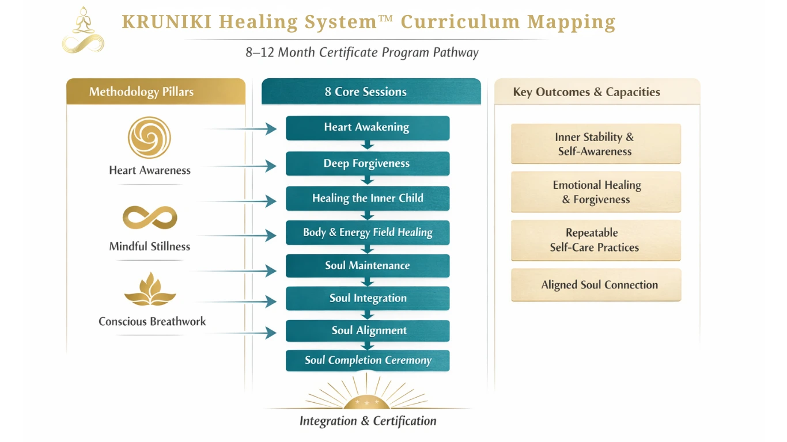

KRUNIKI Healing System™ Certification Program (8–12 Months)
โปรแกรมนี้คือเส้นทางการพัฒนาภายในระยะยาว ภายใต้ KRUNIKI SoulSync System™
สำหรับผู้ที่ต้องการ “เรียนรู้และการปฏิบัติ” อย่างต่อเนื่อง เพื่อกลับมารับรู้ศูนย์กลางภายในของตนเองให้ชัดขึ้น
และนำไปใช้ได้จริงในชีวิตประจำวัน
A long-term inner development pathway under KRUNIKI SoulSync System™
for structured learning and continuous practice—so your inner center becomes clearer
and applicable in everyday life.
Signature — Not a typical course: ไม่ใช่คอร์สที่ให้ “ความรู้เพิ่ม” แต่เป็นระบบการเรียนรู้และการปฏิบัติที่พาคุณกลับมารู้ตัวอย่างเป็นลำดับ
Signature — Not a typical course: not “more information,” but a learning-and-practice system that restores sequential self-awareness.
Page Contents
Program Overview
Snapshot • Structured • Sequential
Snapshot • Structured • Sequential
- ระยะเวลา: 8–12 เดือน (ตามจังหวะการเรียนรู้และการปฏิบัติของผู้เรียน)Duration: 8–12 months (aligned with the learner’s pace of practice)
- โครงสร้าง: 8 Sessions แบบเป็นลำดับ + การบูรณาการปิดท้ายStructure: 8 sequential sessions + closing integration
- แนวทางหลัก: KRUNIKI SoulSync System™ (Learning & Practice เป็นแกน)Primary approach: KRUNIKI SoulSync System™ (learning & practice as the core)
- แกนการปฏิบัติ: สติ • ความนิ่ง • ลมหายใจPractice core: mindfulness • stillness • breath
KRUNIKI System™ Methodology
KRUNIKI เป็นระบบการเรียนรู้เชิงประสบการณ์ (Experiential Learning System) ที่ออกแบบมาเพื่อพัฒนาความมั่นคงภายใน (inner stability) และความสามารถในการดูแลโลกภายใน (self-regulation) อย่างยั่งยืน
KRUNIKI is an experiential learning system designed to develop inner stability and sustainable self-regulation.
ระบบนี้ไม่ได้มุ่งให้ผู้เรียน “เข้าใจแนวคิด” เพียงอย่างเดียว แต่ให้ผู้เรียนค่อย ๆ พัฒนาความสามารถภายในที่ใช้งานได้จริง ผ่านการฝึก การสังเกต และการบูรณาการอย่างเป็นลำดับ เพื่อให้สิ่งที่เรียนกลายเป็น “ระบบภายใน” ที่รองรับชีวิตได้จริง ไม่ใช่การเปลี่ยนแปลงชั่วคราว
It is not only about conceptual understanding. It develops real inner capacity through practice, observation, and sequential integration— so what you learn becomes an “inner system” that supports real life, not a temporary shift.
How the KRUNIKI System Works
หลักการทำงานของระบบ (Methodological Foundations)
Methodological Foundations
-
1) Practice-Based Learning — เรียนรู้ผ่านการปฏิบัติ
KRUNIKI เริ่มจาก “การฝึกจริง” เป็นฐาน ผู้เรียนจะค่อย ๆ เข้าใจตนเองผ่านประสบการณ์ตรง ไม่ใช่การท่องจำ1) Practice-Based Learning
Grounded in real practice and direct experience—beyond memorization. -
2) Somatic & Nervous System Awareness — ใช้ร่างกายและระบบประสาทเป็นฐาน
ให้ความสำคัญกับสัญญาณกาย–ใจ เพื่อสังเกตรูปแบบความตึงเครียด กลไกป้องกันตัว และค่อย ๆ กลับสู่สมดุลโดยไม่ฝืน2) Somatic & Nervous System Awareness
Tracking body-mind signals to understand stress patterns and return to balance without force. -
3) Sequential & Structured Process — เป็นลำดับ ไม่ข้ามขั้น
ออกแบบให้การพัฒนา “ปลอดภัยและมั่นคง” ไม่กระโดดไปขั้นสูงโดยยังไม่มีฐาน3) Sequential & Structured Process
Designed for safety and stability—no skipping foundations. -
4) Integration & Self-Reliance — บูรณาการสู่ชีวิตจริง และพึ่งพาตนเองได้
เป้าหมายคือการสร้างความสามารถในการดูแลโลกภายในด้วยตนเอง ไม่สร้างการพึ่งพาผู้สอนหรือระบบ4) Integration & Self-Reliance
Building self-reliant inner care and real-life integration—without dependency.
วงจรการเรียนรู้ของ KRUNIKI (Learning Cycle)
KRUNIKI Learning Cycle
- Practice — ลงมือฝึกอย่างเป็นโครงสร้างPractice — structured practice
- Awareness — รับรู้สิ่งที่เกิดขึ้นภายใน (กาย/ใจ/อารมณ์)Awareness — noticing inner experience
- Observation — สังเกตโดยไม่ตัดสินObservation — non-judgmental observation
- Integration — นำไปใช้ในชีวิตประจำวันIntegration — applying to daily life
Curriculum Mapping
โครงสร้าง 8 Sessions ของ KRUNIKI ถูกออกแบบให้ทำงานร่วมกันเป็นระบบเดียว จากการวางรากฐานการรับรู้ → การจัดระเบียบโลกภายใน → การบูรณาการและความเป็นอิสระ
The 8-session structure functions as one integrated system— from foundational awareness, to inner reorganization, to integration and autonomy.
8 Core Sessions Overview
Phase I — Foundation: Inner Awareness & Safety (Sessions 1–2)
Phase I — Foundation: Inner Awareness & Safety (Sessions 1–2)
- 1) Heart Awakening
Function: วางรากฐานการรับรู้ตนเอง ผ่านร่างกาย ลมหายใจ และหัวใจ
Outcome: Foundational Self-Awareness1) Heart Awakening
Function: establishing self-awareness through body, breath, and heart
Outcome: foundational self-awareness - 2) Deep Forgiveness
Function: ลดแรงตึงและความค้างคาทางอารมณ์ เพื่อฟื้นความปลอดภัยภายใน
Outcome: Inner Safety & Emotional Release2) Deep Forgiveness
Function: reducing emotional holding to restore inner safety
Outcome: inner safety & emotional release
Phase II — Stabilization: Inner Reorganization (Sessions 3–5)
Phase II — Stabilization: Inner Reorganization (Sessions 3–5)
- 3) Healing the Inner Child
Function: บูรณาการประสบการณ์อดีต ด้วยความอ่อนโยนและการรับรู้ที่ชัดขึ้น
Outcome: Self-Compassion & Emotional Coherence3) Healing the Inner Child
Function: integrating past experience with clarity and gentleness
Outcome: self-compassion & emotional coherence - 4) Healing the Body & Energy Field
Function: ฝังการเปลี่ยนแปลงลงในร่างกายและระบบประสาท ให้เกิดเสถียรภาพเชิงกาย–ใจ
Outcome: Embodied Stability4) Healing the Body & Energy Field
Function: stabilizing change through the body and nervous system
Outcome: embodied stability - 5) Soul Maintenance
Function: สร้างระบบดูแลตนเองในชีวิตประจำวัน ให้เสถียรภาพคงอยู่ได้จริง
Outcome: Sustainable Self-Regulation5) Soul Maintenance
Function: building sustainable daily self-care structure
Outcome: sustainable self-regulation
Phase III — Integration: Inner Autonomy (Sessions 6–8)
Phase III — Integration: Inner Autonomy (Sessions 6–8)
- 6) Soul Integration
Function: รวมประสบการณ์ทั้งระบบให้เป็นโครงสร้างภายในเดียวกัน
Outcome: Integrated Sense of Self6) Soul Integration
Function: integrating the system into one inner structure
Outcome: integrated sense of self - 7) Soul Alignment
Function: นำเสถียรภาพภายในไปใช้กับการตัดสินใจ ความสัมพันธ์ และทิศทางชีวิต
Outcome: Aligned Living7) Soul Alignment
Function: applying inner stability to choices, relationships, and life direction
Outcome: aligned living - 8) Soul Completion Ceremony
Function: ปิดกระบวนการอย่างสมบูรณ์ และคืนอำนาจการดูแลโลกภายในให้ผู้เรียน
Outcome: Inner Autonomy & Completion8) Soul Completion Ceremony
Function: completing the process and affirming inner autonomy
Outcome: inner autonomy & completion
Assessment & Certification Criteria
การประเมินของ KRUNIKI ไม่ใช่การสอบทฤษฎี และไม่เปรียบเทียบระหว่างผู้เรียน แต่ประเมินจาก “พัฒนาการของความสามารถภายใน” ที่เกิดจากการปฏิบัติอย่างต่อเนื่อง เพื่อให้การรับรองสะท้อนความจริงของกระบวนการเรียนรู้
Assessment is not a theory exam and not a comparison between learners. It reflects the development of inner capacity demonstrated through sustained practice.
องค์ประกอบการประเมิน (Assessment Components)
Assessment Components
- Participation & Continuity — การเข้าร่วมและความต่อเนื่องของการปฏิบัติParticipation & continuity of practice
- Reflective Practice — การสะท้อนตนเองอย่างมีสติ (reflection / journaling)Reflective practice (reflection / journaling)
- Embodied Integration — การบูรณาการเชิงกาย–ใจ และการนำไปใช้ในชีวิตจริงEmbodied integration and real-life application
- Nervous System Regulation Capacity — ความสามารถในการกลับสู่ความนิ่ง/สมดุลเมื่อเผชิญความเครียดCapacity for regulation under stress
- Integration Across Daily Life — ความสม่ำเสมอในการนำทักษะไปใช้ในชีวิตประจำวันConsistency of daily-life integration
หมายเหตุเชิงจริยธรรม: การรับรองนี้เป็นการยืนยันการผ่าน “กระบวนการพัฒนาภายในอย่างเป็นระบบ” ไม่ใช่ใบอนุญาตทางการแพทย์หรือการบำบัด และไม่ใช่การรับรองว่าเป็นผู้สอนผู้อื่น
Ethical note: this certification confirms completion of a structured inner development process. It is not medical/clinical licensure and does not automatically certify one to teach others.
Program Standards & Ethics
KRUNIKI Healing System™ ถูกออกแบบและดำเนินการภายใต้มาตรฐานที่ให้ความสำคัญกับ ความปลอดภัย ความชัดเจน และความรับผิดชอบต่อการพัฒนาภายในของผู้เรียน
The program is held under standards emphasizing safety, clarity, and responsibility toward the learner’s inner development.
- Non-Invasive Practice — ไม่เร่ง ไม่ฝืน และไม่แทรกแซงกระบวนการภายในของผู้เรียนNon-invasive practice — no forcing or intrusion
- Respect for Individual Pace — เคารพจังหวะและขอบเขตของแต่ละบุคคลRespect for individual pace and boundaries
- No Dependency Creation — ไม่สร้างการพึ่งพาผู้สอน ระบบ หรือกลุ่มNo dependency creation
- Clear Role Boundaries — แยกบทบาทการเรียนรู้ การเยียวยา และการประเมินอย่างชัดเจนClear role boundaries
- Ethical Facilitation — ผู้อำนวยกระบวนการทำหน้าที่ดูแลโครงสร้าง ไม่ชี้นำชีวิตส่วนบุคคลEthical facilitation — holding structure, not directing personal life
Governance & Program Oversight
KRUNIKI Healing System™ อยู่ภายใต้การกำกับดูแลของ Founder และทีมผู้อำนวยกระบวนการตามมาตรฐานของ KRUNIKI
The program is overseen by the Founder and designated facilitators under KRUNIKI standards.
- ดูแลโครงสร้างและความสอดคล้องของกระบวนการเรียนรู้Maintain structural coherence of the learning process
- รักษามาตรฐานด้านจริยธรรม ความปลอดภัย และขอบเขตบทบาทUphold ethics, safety, and role boundaries
- พิจารณาการรับรองจากพัฒนาการจริงของผู้เรียน ไม่ใช่จากการสอบหรือการเปรียบเทียบCertify based on demonstrated development—not exams or comparison
การกำกับดูแลไม่ได้มีเป้าหมายเพื่อควบคุมผู้เรียน แต่เพื่อค้ำจุนโครงสร้างให้กระบวนการพัฒนาภายในดำเนินไปอย่างถูกต้องและปลอดภัย
Oversight is not intended to control learners, but to hold the structure so inner development proceeds safely and correctly.
What This Program Is / Is Not
This Program Is
This Program Is
- ระบบการเรียนรู้และการปฏิบัติระยะยาว (8–12 เดือน) แบบมีโครงสร้างA structured long-term learning-and-practice system (8–12 months)
- กระบวนการพัฒนาความมั่นคงภายใน ผ่านการฝึก สังเกต และบูรณาการA process for inner stability through practice, observation, integration
- เส้นทางที่ช่วยให้ผู้เรียนพัฒนาความสามารถในการดูแลโลกภายในด้วยตนเองA path toward self-reliant inner care
- โปรแกรมที่ออกแบบสำหรับผู้ที่พร้อมรับผิดชอบต่อกระบวนการเรียนรู้ของตนเองDesigned for learners ready to take responsibility for their process
This Program Is Not
This Program Is Not
- ไม่ใช่การบำบัดทางการแพทย์ หรือการรักษาทางจิตเวชNot medical or psychiatric treatment
- ไม่ใช่คอร์สลัดหรือโปรแกรมเร่งผลลัพธ์Not a shortcut or rapid-results program
- ไม่ใช่ระบบที่ให้คำตอบสำเร็จรูป หรือชี้นำชีวิตผู้เรียนNot a prescriptive life-directing system
- ไม่ใช่การรับรองเพื่อไปสอนหรือเยียวยาผู้อื่นโดยอัตโนมัติNot automatic certification to teach others
KRUNIKI Healing System™ ไม่พาคุณไปเป็น “ใครคนใหม่” แต่พาคุณกลับมาเชื่อมต่อกับตัวเองอย่างมีรากฐาน และยืนอยู่ได้ด้วยตนเอง
KRUNIKI Healing System™ does not make you “someone new”—it returns you to yourself, grounded and self-reliant.
Pathways After Completion
เมื่อจบ KRUNIKI Healing System™ ผู้เรียนไม่ได้ถูกคาดหวังให้ “อยู่ต่อ” หรือ “ยึดติดกับระบบ” แต่ถูกสนับสนุนให้เดินต่ออย่างอิสระ ด้วยโครงสร้างและทักษะที่พัฒนาแล้ว
After completion, learners are not expected to “stay” or attach to the system. They are supported to continue independently with the structure and skills they have built.
- ใช้โครงสร้างและทักษะที่ได้ พัฒนาและดูแลโลกภายในด้วยตนเองUse the structure and skills for ongoing self-care and growth
- นำการเรียนรู้ไปบูรณาการกับชีวิต การทำงาน และความสัมพันธ์ในแบบของตนIntegrate learning into life, work, and relationships in your own way
- เลือกเส้นทางการเติบโตต่อไปอย่างอิสระ ตามจังหวะและความพร้อมของชีวิตChoose next growth steps based on your own timing and readiness
สำหรับผู้ที่ต้องการเรียนรู้ต่อ อาจเลือกเข้าร่วมเส้นทางการเรียนรู้เพิ่มเติมของ KRUNIKI ในฐานะการต่อยอด (continuation) ไม่ใช่การพึ่งพา
For those who wish to continue, additional KRUNIKI pathways may be joined as continuation—never dependency.
Application & Readiness
เหมาะกับคุณ หากคุณ…
Fit & readiness (This may fit you if you…)
- ต้องการระบบที่ยืนพื้น ชัด และเป็นลำดับ ไม่ลอยWant a grounded, clear, sequential system
- พร้อมฝึกอย่างต่อเนื่อง เพื่อให้สิ่งที่เรียนกลายเป็นของใช้จริงในชีวิตAre willing to practice consistently for real-life usability
- ต้องการกลับมารับรู้ตัวเองและจัดระเบียบภายใน โดยไม่เร่ง ไม่ฝืนWant inner reorganization without rushing or forcing
- ต้องการเส้นทางระยะยาวที่ช่วยให้ความมั่นคงภายใน “คงอยู่ได้” ไม่ใช่ดีขึ้นชั่วคราวSeek stability that lasts—not temporary improvement
อาจยังไม่เหมาะ หากคุณ…
This may not fit if you…
- ต้องการทางลัด หรืออยากได้ผลเร็วมากโดยไม่ปฏิบัติWant shortcuts or fast results without practice
- ต้องการสูตรสำเร็จแบบคัดลอก (โปรแกรมนี้เน้นประสบการณ์ตรงจากการปฏิบัติ)Want copy-paste formulas (this program emphasizes direct experience)
- ต้องการให้คนอื่น “ทำให้” มากกว่าการลงมือพัฒนาความสามารถภายในของตนเองPrefer others to “do it for you” rather than building inner capacity
ทัก LINE เพื่อขอคุยก่อนเข้าร่วม (สั้น กระชับ และยืนพื้น) และประเมินความเหมาะสมร่วมกัน
Message on LINE to start a short, grounded clarity conversation and assess readiness together.
Program Brief • Clarity Call • Standards
ขอ Program Brief หรือจอง Clarity Call เพื่อเช็คความพร้อมและความคาดหวังร่วมกัน — แบบชัด นิ่ง และไม่เร่ง
Request the Program Brief or book a Clarity Call to align readiness and expectations—clear, calm, and unforced.